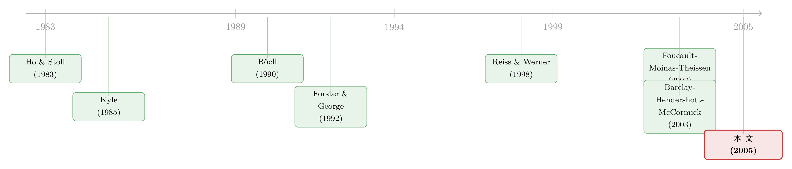

匿名的市场，反而藏不住「聪明钱」
本文读的是 Reiss & Werner (2005, Review of Financial Studies)：在伦敦交易所，交易商之间既可以在「记名」的直接报价市场成交，也可以躲进四家「匿名」的第三方经纪系统。教科书会告诉你，匿名的地方该是知情交易者的天堂——可这篇文章用一年完整的交易商间数据告诉我们，事实恰恰相反：带信息的交易反而涌向了记名的直接市场（价格冲击约 60–70 个基点），而匿名经纪市场里成交的，大多是「无知」的对冲库存单（价格冲击仅 10–20 个基点）。这个反直觉的结论，靠的是一个被大多数模型忽略的细节——匿名市场里的流动性，是别人「自愿」给的。
1 一个被理论预言反了的事实
先说一个几乎写进每一本市场微观结构教科书的直觉。
一个交易者，如果手里攥着别人不知道的信息，他最怕什么？最怕暴露身份。一旦对手知道「来的是谁」，就会立刻警觉、抬高报价、甚至撤单躲开。所以，按照 逆向选择 (adverse selection) 的逻辑，知情交易者天然偏爱匿名的交易场所——在那里，没人知道挂单背后站着的是不是「内幕人」，他可以悄无声息地把信息变现。Röell (1990)、Fishman & Longstaff (1992)、Forster & George (1992) 这一脉的理论模型，几乎众口一词地得出同一个预言：越匿名、越不透明的市场，越会吸引带信息的订单。
而且这个预言不是纸上谈兵。Barclay, Hendershott & McCormick (2003) 拿纳斯达克做过对照：记名的做市商报价 vs. 匿名的电子通讯网络（electronic communication networks, ECN），结果发现 ECN 上的成交有更大的永久价格冲击——也就是说，匿名的 ECN 确实把知情交易者吸了过去。看上去，理论和数据严丝合缝。
那么，问题来了。
Reiss 和 Werner 手里拿着一份伦敦交易所独一无二的数据：一整年里，伦敦的证券交易商之间，每一笔直接成交、每一笔经纪成交，全都在册。在伦敦，交易商想跟同行做一笔交易，有两条路——
- 一条是直接市场 (direct market)：打电话给报价的同行，按对方的公开报价成交。这条路是记名的，发起方必须报上自己的名号，还得说明这是替客户做、还是替自己的账户做。
- 另一条是经纪市场：把限价单挂到四家第三方系统之一（Cedar、Garban、First Equity、Tullett & Tokyo，统称 IDB），由独立经纪人居间撮合。这条路是匿名的——成交前、成交中、成交后，对手方永远不知道你是谁。
按教科书，知情的交易商应该往匿名的 IDB 里钻才对。可数据给出的，是一记响亮的耳光：直接市场上一笔交易的平均价格冲击高达 60–70 个基点，而匿名经纪市场上只有 10–20 个基点。换句话说，藏在直接、记名市场里的，才是真正的「聪明钱」；匿名市场反倒成了「老实人」对冲库存的清水池子。
这就是全篇要讲透的那一个核心：为什么在伦敦，匿名的市场反而藏不住信息？
2 关键的那一步：流动性是「自愿」给的
要解开这个谜，得先想清楚一件事——匿名市场里的流动性，是谁提供的？
在直接市场，规则强制了流动性。伦敦交易所有一个叫 正常市场规模 (Normal Market Size, NMS) 的概念：交易商一旦公开挂出报价，就有义务按报价吃下至少一个 NMS 的单子。也就是说，哪怕对手摆明了是来「割」你的，只要他要的量不超过 NMS，你也得认。于是一个知情的交易商，永远可以确定地在直接市场里把单子打出去——代价只是一个不太好看的价格。
但匿名的经纪市场不一样。在伦敦，没有任何人有义务往 IDB 里供应流动性。挂不挂限价单、挂多少、什么时候撤，全凭交易商自愿。于是事情就微妙了：
首先，匿名 IDB 有一道关键的门槛——排他性 (exclusivity)。只有在某只股票上公开报价的注册交易商，才被允许在该股票的 IDB 里交易。这意味着客户（哪怕是知情的客户）根本进不来。所以 IDB 里的逆向选择，只可能来自交易商彼此之间，而不来自客户。
接着，一个自然的问题是：交易商什么时候愿意往 IDB 里挂单？答案是——当他不担心对面是个知情者的时候。一旦风声不对，怀疑同行里有人手握信息，理性的反应就是把限价单撤掉。于是：
匿名市场的流动性是内生的 (endogenous)：逆向选择风险一升高，限价单就被撤走，匿名市场的流动性瞬间蒸发。
于是真正关键的一步出现了。设想一个手握时效信息的知情交易商，他当然想去匿名市场——藏起身份，悄悄成交，多好。可问题是，正当他最想用匿名市场的时候（即逆向选择最严重时），匿名市场里恰恰没有流动性了——因为别的交易商早就闻到味道、撤单跑路了。他面对一个两难：要么把单子挂进 IDB，赌一把能不能成交（成交不了，信息还会泄露）；要么干脆转身去直接市场，按公开报价、用一个差一点的价格、但确定地把单子打出去。
如果信息是时效性的——而知情交易往往如此——那么「确定、立刻成交」压倒了「便宜但可能落空」。于是知情交易者被逼回了记名的直接市场。
这就是反转的全部：不是知情者不爱匿名，而是匿名的庇护恰恰在他最需要的时候消失了。 匿名市场像一把只在晴天才借给你的伞——真下暴雨时，它已经被收走了。
（关于「看不见报价人名字、价差反而变窄」的另一面证据，可参见《看不见报价人的名字，价差为什么反而变窄了？》，那讲的是 Foucault–Moinas–Theissen 的巴黎实验，与本文是同一根问题的两端。）
3 识别策略：用「价格改善」和「价格冲击」两把尺子
这篇文章没有正式的结构模型，而是把上面的故事翻译成一组可检验的 假设 (hypotheses)，再用两把尺子去量。
第一把尺子是价格改善 (price improvement)：成交价相对于当时公开报价（inside quote）的好坏。本文的 假设 2 是无条件的——只要在经纪市场看到成交，它的有效价差就应当小于同期的公开市场价差。直觉很简单：直接市场的报价里，打包进了「跟知情客户、知情同行交易」的全部风险；而经纪市场里客户进不来，价差只反映「跟知情同行交易」这一项，自然更窄。数据支持这一点——经纪市场的参与者拿到了显著的价格改善，而直接市场的交易几乎没有任何价格改善。
第二把尺子是价格冲击 (price impact)：成交之后价格和报价的永久性变化，这是衡量一笔交易「含多少信息」的标准工具。这把尺子量出了全文的核心反差，也直接把两个互斥的假设送上了擂台：
- 假设 3A（教科书预言）：匿名经纪交易比直接交易含更多信息。
- 假设 3B（本文主张）：匿名经纪交易比直接交易含更少信息。
数据站在了 3B 这边——60–70 bp vs. 10–20 bp，干净利落。
而真正把「内生流动性」这个机制钉死的，是 假设 5 那个漂亮的细节。前面说过，挂报价的交易商只有义务吃下一个 NMS、却没有义务接受更大的单。那么反过来推理：如果他愿意接一笔大于 NMS 的单，多半是因为他判断对手是「无知」的；如果他只肯接恰好一个 NMS、半步不让，那往往是因为他怀疑对手知情、而对手其实还想要更多。于是预测就来了：
恰好等于报价规模（一个 NMS）的直接交易，应当拥有所有交易里最大的价格冲击。 数据正是如此——这等于在说，挂单的交易商在用「拒绝供应更多量」来给（疑似）知情的同行画像。
顺着这条线还能再推一步。既然知情者在直接市场里只能拿到「一个 NMS」的配给，他要把信息变现，自然会去拆单 (order-splitting)——同一个方向、由同一个交易商、快速连续地打出一串直接交易。假设 4 因此预言：宽价差下的直接交易更可能知情、价格冲击更大；而本文确实发现，由同一交易商、同方向、快速连续的直接报价交易，价格冲击显著大于单笔交易。
最后，记名这件事本身还给了一个额外的检验角度（假设 6）。直接市场里，发起方必须亮明身份。如果亮出来的是一个坐拥大量客户订单流的大交易商，接单方就更容易猜测「他大概是急着、带着信息来的」，于是更倾向于移动报价或撤单。数据印证：由大交易商发起的直接交易，信息含量显著更高；这类大交易商的连续交易，价格冲击也更大。而在匿名市场里，由于身份不可见，大交易商的单子当场几乎没有冲击——冲击是延迟显现的。
（这套关于伦敦交易所「大单为什么反而拿到折扣」的逻辑，与同一批作者、同一份数据的另一篇研究互为表里，见《为什么大单反而能拿到折扣？》。）
4 数据
数据的分量，是这篇文章能站得住的根本。
- 来源：伦敦交易所 Quality of Markets Group 提供的内部数据，覆盖一整年里所有的交易商间成交——既包括四家 IDB 的全部匿名经纪成交，也包括全部记名的直接成交。
- 为什么珍贵：以往研究交易商间交易，要么用美国国债市场的
GovPX数据（Boni & Leach 估计它只覆盖了短期国债经纪量的约71%，且根本不含直接交易），要么用外汇市场那些时间序列极短、对手方信息残缺的样本（Lyons 1995 等）。这些数据都做不了「场所选择」的完整研究——因为它们看不全。而本文是两类场所、全样本，这才让「同一批交易商，在同一时刻，面对两个可选场所，把哪类单子放去了哪里」这个问题第一次能被干净地回答。 - 观测单位：单笔交易商间成交，附带成交时点、价格、规模，以及（在直接市场里）发起方与接单方的身份。
- 一个绕不开的样本限制：研究者只能观察到已经成交的经纪限价单——那些挂出去却没成交、或被撤掉的单子是看不见的。这一点逼得作者必须把所有假设都写成「关于已成交订单的时点、价格与规模」的命题，而不能直接谈「挂单意愿」。这既是诚实的交代，也埋下了后文要讨论的识别隐忧。
5 文献脉络
把这篇文章放回它生长的那条线里，故事会更清楚。
最早，交易商市场被理解成一台分担风险 (risk-sharing) 的机器。Ho & Stoll (1983) 给出了经典图景：在没有信息不对称的竞争性交易商市场里，交易商间交易就是为了把库存的不平衡在彼此之间重新摊匀，靠的是各家风险偏好、库存和对基本面看法的差异。
然后，信息进来了。Kyle (1985) 把知情交易者、噪声交易者和做市商放进同一个模型，逆向选择从此成了理解价差与价格冲击的中心语言。沿着这条线，一批研究开始追问：匿名与透明，到底怎样影响交易？Röell (1990)、Fishman & Longstaff (1992)、Forster & George (1992) 给出了那个后来被反复引用的预言——匿名招引知情交易。

接着，伦敦这块特殊的试验田被两位作者自己开垦了出来。Reiss & Werner (1998) 先证明了交易商间交易确实有风险分担的动机；Naik, Neuberger & Viswanathan (1999) 则研究了交易披露规则对协商交易市场的影响。与此同时，理论也在往前走——Foucault, Moinas & Theissen (2003) 提出：在记名（透明）的限价单市场里，知情的大交易者会故意挂出更差的价格，以防被无知者「搭便车」；他们用巴黎证交所撤除经纪人身份后价差收窄、深度增加的事件，佐证了匿名的好处。
而在大洋彼岸，Barclay, Hendershott & McCormick (2003) 用纳斯达克 vs. ECN 的对照，给出了「匿名招引知情」的强力实证。
本文 (2005) 恰恰站在这个看似已成定论的结论对面。它的妙处不在于推翻 Barclay 等人的发现，而在于指出了一个被忽略的边界条件：纳斯达克的 ECN 不排他——知情的客户也能进去匿名交易；而伦敦的 IDB 排他——只有注册交易商进得来。正是这道门槛，把客户的逆向选择挡在了门外，让匿名市场的流动性能够「自愿」存在，也让知情者在风声不对时被反挤回记名市场。同一个「匿名」标签，在排他与不排他两种制度下，结论可以完全相反。
6 评论与延伸（Q&A + 研究方向）
(a) 几个可能的疑问
Q：这篇文章是不是和「匿名招引知情交易」的主流结论直接矛盾？
不矛盾，是补了一个边界条件。主流结论成立的前提是「匿名场所对知情者开放且流动性可靠」。本文指出：当匿名场所排他（客户进不来）、且流动性全靠自愿供应时，逆向选择一升高、流动性就先撤了，知情者反被逼回记名市场。它解释了为什么纳斯达克 ECN（不排他）和伦敦 IDB（排他）会得出相反的实证。
Q：60–70 bp vs. 10–20 bp 的差距，会不会只是因为两个市场的交易规模不同，而非信息含量不同？
作者正是用「恰好一个 NMS 的直接交易拥有最大价格冲击」「拆单序列冲击更大」「大交易商冲击更大」这几个交叉证据来排除单纯的规模解释的。如果只是规模效应，就不该出现「卡在 NMS 这个配给点上、冲击反而最大」这种结构性特征——它指向的是供给方的信息推断，而非订单大小本身。
Q：只能看到「已成交」的经纪单，会不会带来严重的选择偏误？
这是本文最该警惕的地方，作者也坦白了。看不见撤单和未成交单，意味着我们观察到的经纪成交是被「流动性还在」这个条件筛选过的样本。好在它的方向恰好强化而非削弱主结论：正因为高逆向选择时经纪流动性消失、成交不发生，我们才会观察到「能在经纪市场成交的，普遍信息含量低」。但若想严格量化这个机制，理想情况下需要完整的挂单与撤单簿。
Q：经纪市场要付约 5 bp 的费用，会不会才是知情者不去的真正原因？
费用确实是一项成本，但它对知情与无知交易者是对称的，无法单独解释「信息含量」的分化。真正起筛选作用的是流动性的内生性与时效信息的「等不起」。费用更多是在公开价差很窄时，压低经纪市场吸引力的一个边际因素（对应假设 1）。
Q：这套结论能不能搬到今天的市场？
能搬的是机制，不能照搬的是结论。今天的暗池、ECN 的「排他/开放」程度各不相同：开放给所有人的匿名场所更接近纳斯达克 ECN 的情形，而仅限特定会员的场所更接近伦敦 IDB。判断一个匿名场所会招引还是排斥知情交易，关键要先问一句——它的流动性是被规则强制的，还是自愿供应的；它对知情客户开不开放。（这一点在《把自家的灯关掉：一个交易所的「黑暗实验」》里有呼应。）
Q：交易商之间到底为什么要交易——是为了分担风险，还是为了信息？
两者都有，且交织在一起。本文承接 Ho & Stoll (1983) 和作者自己 1998 年的工作：库存再平衡是底色，但信息不对称会扰动这台风险分担机器。文章的贡献恰在于说明，正是这两种动机的分离——无知的库存单去匿名市场、知情单去记名市场——支撑起了多场所并存的均衡。
(b) 几个可能的研究问题与提案
1. 把这套「排他性 × 内生流动性」框架搬到公司债市场
【经济故事】公司债越来越多地在「全或无」的电子询价平台（如全匿名的 all-to-all 撮合）与传统「打电话找交易商」的记名渠道之间分流。本文的核心洞见——匿名场所的庇护在逆向选择最高时消失——能直接用来预测：信息敏感的大宗债券交易，是否也被挤回记名的交易商渠道。 【可行性】中。TRACE 能给到成交价与规模、估出价格冲击，但区分「匿名平台 vs. 记名询价」需要平台层面的渠道标识，这部分数据较难获取；若能拿到某个 all-to-all 平台的成交标记，识别就站得住。
2. 外资交易商是不是匿名市场里更「危险」的对手？
【经济故事】如果接单方对「谁更可能知情」的推断，部分依赖对手的身份特征（本文已证明「大客户流交易商」会被识别为更知情），那么在跨境市场里，本地 vs. 外资交易商的身份，可能系统性地改变报价方的撤单与让价行为。这把本文的「大交易商效应」推广到了一个有政策含义的维度。 【可行性】中高。需要带交易商国籍标签的交易商间成交簿（部分新兴市场交易所有此类监管数据）。识别上可借本文的价格冲击框架，比较本地与外资发起方的冲击差异。（与《外资真有「信息劣势」吗？》的问题正好对偶。）
3. 直接观测「撤单」来检验内生流动性机制
【经济故事】本文最大的遗憾是只看得到成交单。如果能拿到匿名经纪系统的完整限价单簿（含挂单与撤单时点），就能直接检验「逆向选择信号一出现，限价单是否成批被撤」这个机制的核心一环，而不必从成交结果反推。 【可行性】中。取决于能否获得某个 IDB 或现代暗池的全单簿快照数据；方法上可用同方向直接交易序列的到达作为「逆向选择冲击」的事件，观测匿名簿深度的瞬时反应。
4. 把价格改善与价格冲击放进同一个无套利条件
【经济故事】本文结尾提出一个均衡论断：若两类交易要长期并存，交易商必须对二者无差异——也就是说，匿名市场更好的价格（价格改善）必须恰好补偿它在流动性可得性上的劣势，而记名市场更差的价格必须由它的「即时确定成交」来补偿。能否把这个无差异条件写成一个可估计的结构方程，直接估出「即时性」的隐含价格？ 【可行性】中低。需要结构化建模与对未成交单的分布做假设，识别较重，但若成功，会给「流动性 vs. 即时性」这个老权衡一个量化的价格标签。
7 我的判断
这篇文章的贡献，不在于发现了一个「反常」，而在于为一个看似反常的事实，找到了制度层面的因——并且这个因可以被推广。它真正交给后人的，是一句方法论上的提醒：谈论「匿名招引还是排斥知情交易」之前，必须先问匿名场所的流动性是不是自愿供应的、对知情客户是否开放。同一个「匿名」标签，在排他与不排他两种制度下结论完全相反——这把许多关于暗池、ECN 的争论，从「匿名好不好」的口水仗，提升到了「在什么制度条件下」的精确讨论。数据的完整性（两类场所、全样本一整年）则让这个论断格外扎实，这是用 GovPX 或外汇碎片数据做不到的。
我对识别的担忧，集中在那个被反复提到的样本限制：只观测到已成交的经纪单。整个「内生流动性」机制的核心一环——「逆向选择升高 → 限价单被撤 → 流动性消失」——在本文里是从成交结果反推出来的，而非被直接观测。这条逻辑链自洽、也有 NMS 配给点和拆单序列这些旁证撑着，但它终究没有亲眼看到「撤单」这一步。我会更想看到一份带挂单与撤单时点的完整匿名单簿，把这一步从「合理推断」变成「直接证据」。此外，价格冲击作为信息含量的代理，在交易商市场里也可能混入库存效应——本文用多个交叉检验缓解了这一点，但若能把库存路径也纳进来，结论会更无懈可击。
后续我最想看到的，是把这套框架带到今天的公司债与信用市场：all-to-all 平台的兴起，本质上是在重演伦敦当年「匿名 vs. 记名」的分流，只是排他性的边界换了一种画法。谁被允许进入匿名池、谁的流动性是强制的，依然决定着「聪明钱」最终落在哪一边。
参考文献
- Barclay, M. J., T. Hendershott, and D. T. McCormick (2003). Competition Among Trading Venues: Information and Trading on Electronic Communication Networks. Journal of Finance 58, 2637–2665.
- Boni, L., and J. C. Leach (2004). Expandable Limit Order Markets. Journal of Financial Markets 7, 145–185.
- Fishman, M., and F. Longstaff (1992). Dual Trading in Futures Markets. Journal of Finance 47, 643–672.
- Forster, M., and T. George (1992). Anonymity in Securities Markets. Journal of Financial Intermediation 2, 168–206.
- Foucault, T., S. Moinas, and E. Theissen (2003). Does Anonymity Matter in Electronic Limit Order Markets? Working Paper 784, Groupe HEC.
- Ho, T., and H. Stoll (1983). The Dynamics of Dealer Markets under Competition. Journal of Finance 38, 1053–1074.
- Kyle, A. S. (1985). Continuous Auctions and Insider Trading. Econometrica 53, 1315–1335.
- Lyons, R. (1995). Tests of Microstructural Hypotheses in the Foreign Exchange Market. Journal of Financial Economics 42, 275–298.
- Naik, N., A. Neuberger, and S. Viswanathan (1999). Trade Disclosure Regulation in Markets with Negotiated Trades. Review of Financial Studies 12, 873–900.
- Reiss, P. C., and I. M. Werner (1998). Does Risk-Sharing Motivate Interdealer Trading? Journal of Finance 53, 1657–1703.
- Röell, A. (1990). Dual-capacity Trading and the Quality of the Market. Journal of Financial Intermediation 1, 105–124.